Review 1# - No Rest For the Wicked
“You’ll either hate it or love it!”
Video Review
You’ll either hate it or love it—there’s no in-between. “No rest for the wicked” isn’t even remotely similar to the games most people imagine when they hear the abbreviation ARPG. So don’t expect another Diablo, but on the other hand, don’t expect another Souls-like either. This hybrid simply borrows bits from various genres, creating something new, and it must be said, not everyone will appreciate it. However, if you don’t mind frequent deaths, lots of backtracking, and constantly searching for hidden paths, then you’re in the right place. Since April 18th, you’ve been able to purchase the pre-release game on PC for 35 euros. Moon Studios revels in this sort of thing and has created a game that doesn’t give anything away for free, but the reward is kingly. For those who persevere, a vast array of mechanics, a diverse world full of details, unique characters, and a dramatic story gradually unfold. But is everything as rosy as it seems, or are we just encountering another overly hyped title? I bought the game right at launch, and together with ViktorBrenek, we thoroughly tested it here on YouTube and subsequently on Twitch.
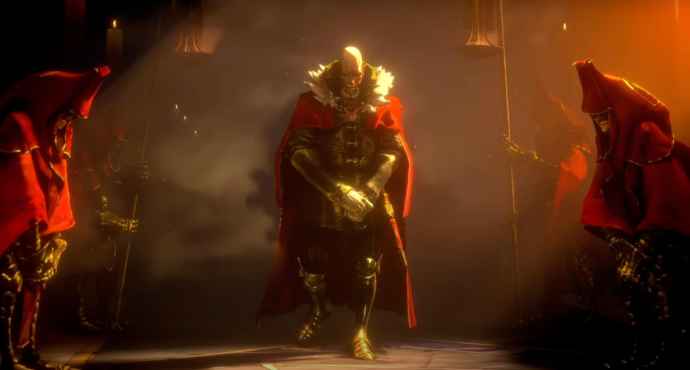
“If you’re expecting perfect optimization right now, you’d better save yourself the nerves.”
Firstly, what will likely catch your eye is the game’s stylization. For some, the graphics may be appealing, while for others, they might be considered a mess—reviews vary. However, one thing must be acknowledged: the visual cohesion can immerse you completely. Nowhere will you find unfinished assets or repeated 3D models. Everything in the world has its unique style, its patina, and its charisma. Brush strokes are evident everywhere, creating unity, including in the VFX effects such as water, smoke, or fire, which may even seem to emanate from your computer after a few hours of play. However, the optimization is dreadful, and the game truly suffers because of it. The inability to adjust the game further, with individual settings practically making no difference, is another issue. So even on solid setups like mine with a 6700XT, you’ll barely reach 60 FPS, and you’ll pray that no cutscene comes, as the game regularly drops below 30 frames per second. However, it must be noted that the game is still in early access, and if you’re expecting perfect optimization right now, you’d better save yourself the nerves and give the developers time. 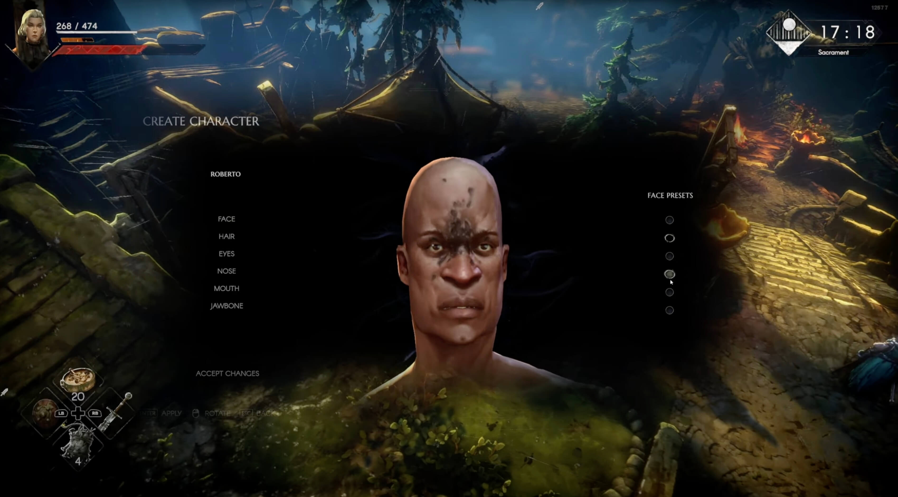
“Therefore, with itemization, you’re capable of doing a lot.”
That being said, it doesn’t mean that the game doesn’t offer enough entertainment already, so let’s take a look at the mechanics. There are plenty of them in the game. We won’t even mention combat-based animations, which are a mechanic in themselves that you must master, ideally including perfect parries or dodges to succeed. In combat, there’s also a stagger system, which counts the number of blocked strikes and after a certain time, staggers either you or the enemy, just like in Souls-like games. You’ll also find classic health points replenished by food, which you’ll have to craft painstakingly, and focus, which represents something like mana, gradually replenishing from your successful strikes. It can then be used for using so-called runes, which enrich the combat system with a set of different abilities. You can freely insert these into weapons in the town according to the rarity of items, as you would expect from classic ARPG games. 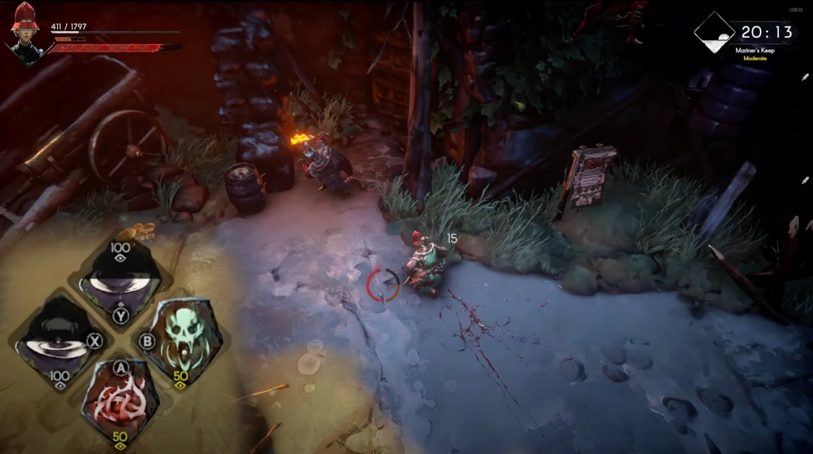 You’ll also find classic white to legendary items with varying flexibility of modification. White items are typically the most flexible for modifications, but they lack additional affixes, which can be negative in the game using cursed purple items. 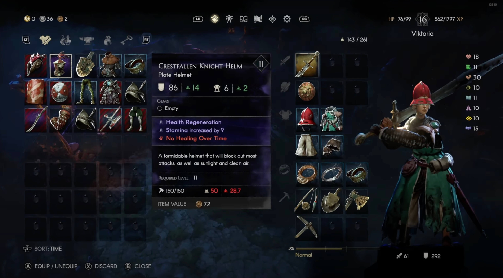 Magical items, which you can obtain through enchanting in the town if you’re lucky and the item doesn’t turn out cursed, are average. However, you can also customize your equipment using infusions, which allow you to insert classic gems into all types of items, as you can in Diablo IV. Different types of equipment have different effects and strengths here as well. Finally, you’ll also find classic upgrades at the blacksmith, which subtly raise the suffixes of your precious items. Items in this game are handled masterfully. 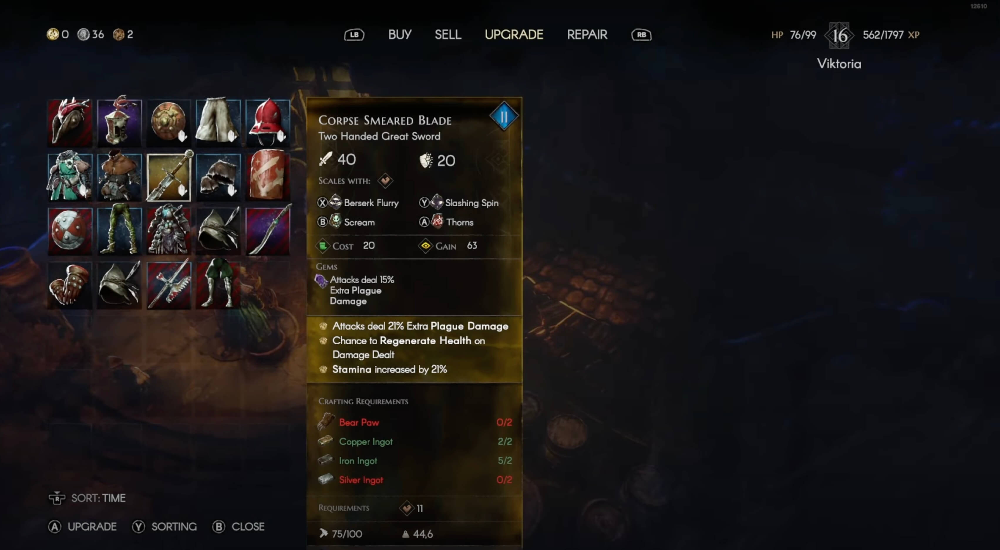 At first glance, you’ll see whether the item strengthens you or has any limitations, and what’s more, there’s always something you can do about it, and sometimes it’s necessary due to the weight on your character, which has three levels and distinguishes the character’s ability to evade in different forms of engagement. Unfortunately, you’ll often find yourself lacking primary attributes, which are a common requirement for wearing them and represent the alpha and omega in strengthening the character himself for every player level, where they are given 3 points to distribute freely. Therefore, with itemization, you’re capable of doing a lot, and even though loot from monsters is RNG, meaning random, you can still complete the game even with white equipment. At least in the first act, where the story in the pre-release ends. 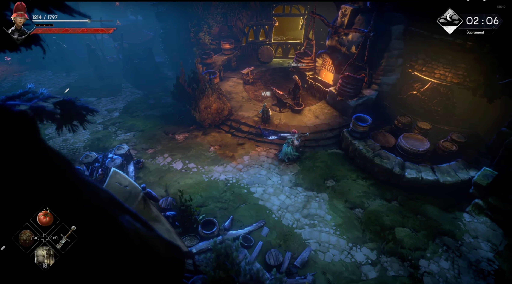
“The game currently offers roughly 15 hours of campaign.”
So overall, the game currently offers roughly 15 hours of campaign gameplay. However, there are additional mechanics to come, namely the so-called end-game. In No Rest, this is addressed by several mechanics, and the developers have already hinted that this won’t be all.
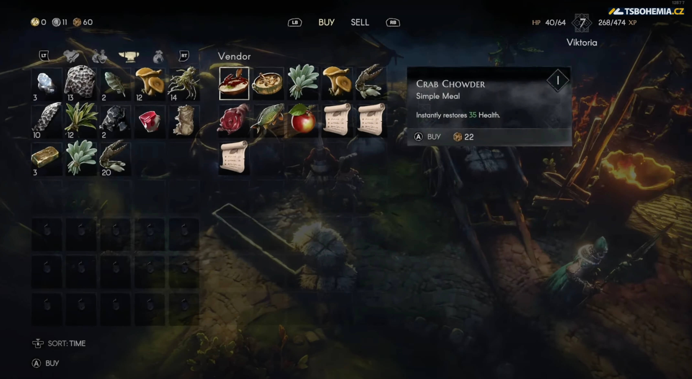
For now, you can try out an automatic system that restores previously cleared locations. When you return to them, you can find completely different monsters, loot, and possibly even smaller challenges that you can pick up again in the town and complete on a daily or weekly basis. These challenges are divided into collector challenges, where you can deliver various types of materials, or combat challenges, which again spice up previously cleared locations in exchange for great loot and currency. Even though it might become tiresome over time, the developers are doing something right here, and even after dozens of visits, it still keeps me entertained.
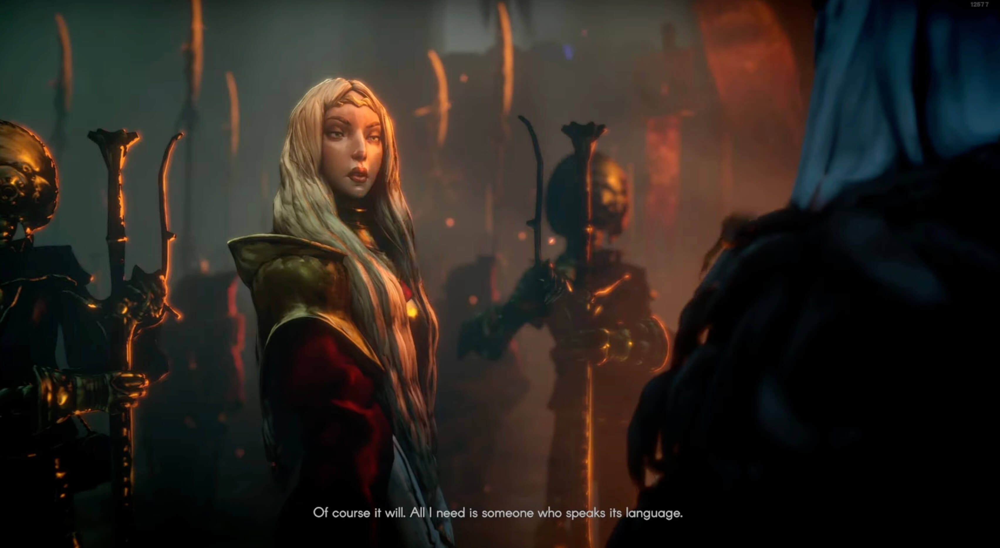
Moreover, the system of restoring locations intensifies, and with each defeated boss, tougher and tougher monsters spawn in the previous locations. Thus, the game naturally reacts to the player’s progress, and even though it might seem that you won’t interact much with this system, the opposite is true. The player is constantly forced to return to the original locations for the main story, side missions, new paths, and especially for materials that are found in those locations. These materials can then be used, for example, for crafting equipment or revitalizing the town, which is another mechanic that can easily consume another dozen hours of your time. The town is practically in ruins, and its restoration takes place in real-time. Every repaired house makes sense and brings new trading options, upgrades, or even facilitates movement around the town. Moreover, after completing the campaign, the player also unlocks a housing system, where they can purchase one of several possible houses and create furniture, crafting stations, or storage space.
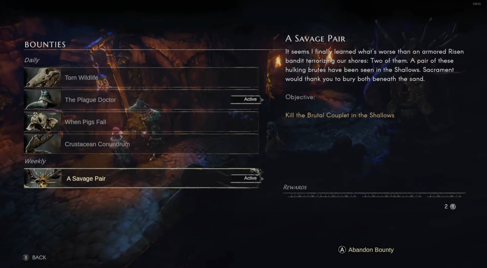
All the mentioned progression doesn’t go to waste because another endgame activity challenges the player with a real problem. After completing the campaign, you also unlock challenge missions, which you can undertake at the local graveyard and dive into randomly generated dungeons full of monsters with multiple floors, and death sends the player back to the beginning. There are currently 5 levels, but it must be noted that even with my twentieth level, I can barely scratch the monsters in the first level, so the player has something to do again. So if you enjoy horizontal progression and don’t mind min-maxing all possible details that the game offers, you can try to progress further and further in this mechanic.
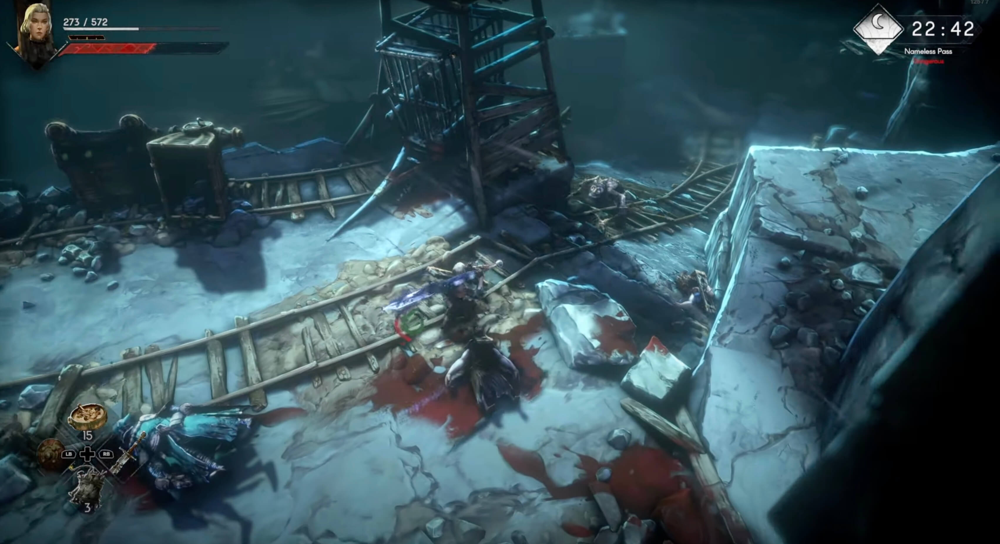
“However, not everything is positive.”
There are probably many things I haven’t mentioned. The game is full of details and rewards you for defeating bosses by expanding equipment slots or for farming materials within the housing system, and even for simply discovering any nook where a location for hours of fun often lurks. However, not everything is positive, and almost everything I mentioned has significant “buts.”
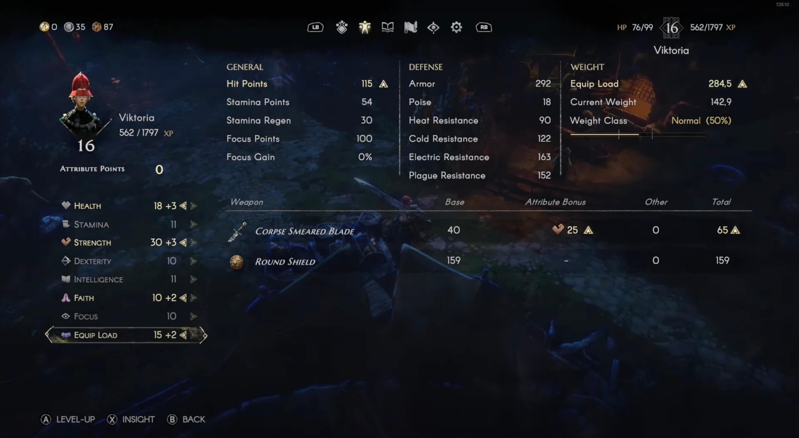
The reward system practically replaces the quality of life, so you’ll suffer for the first 10 hours of the game. Some locations are lengthy, and if you don’t have recipes for food available, you’ll simply keep dying and walking huge stretches again. This is even more noticeable in the town, where you’re practically always figuring out how to get to your house or where to find a certain NPC. The player’s inventory also works similarly, gradually expanding as you defeat bosses. So for the first few hours, you’ll constantly pick up things you don’t currently need, just because there’s something better lying on the ground.
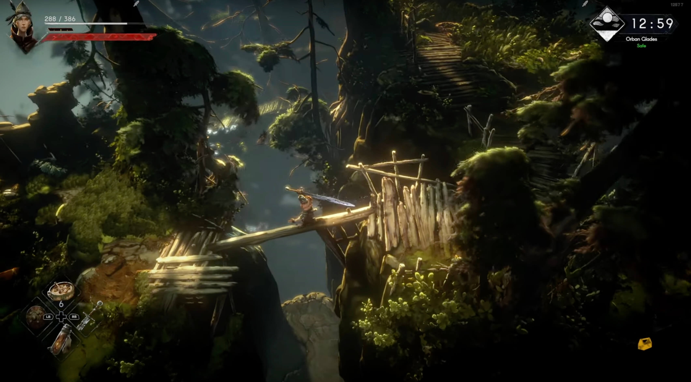
“Often, the character just grazes a pixel somewhere and falls.”
I also believe that for many players, the system of restoring the original locations, which you have to constantly revisit, might not be too appealing. Moreover, you can’t teleport more than to the last whisper, which represents something like a bonfire in Souls-like games. So you’re constantly walking everywhere, which wouldn’t be such a problem, but the locations are often littered with fallen logs that the player must balance on. Often, the character just grazes a pixel somewhere and falls, or simply runs out of stamina in the water, and you’re out of luck. What’s worse is that the game directly encourages such falls, so you often find secret locations, but death often leads not only to exploration but also to breaking things that the player must constantly repair and at the beginning of the game, they don’t have the financial means to do so.
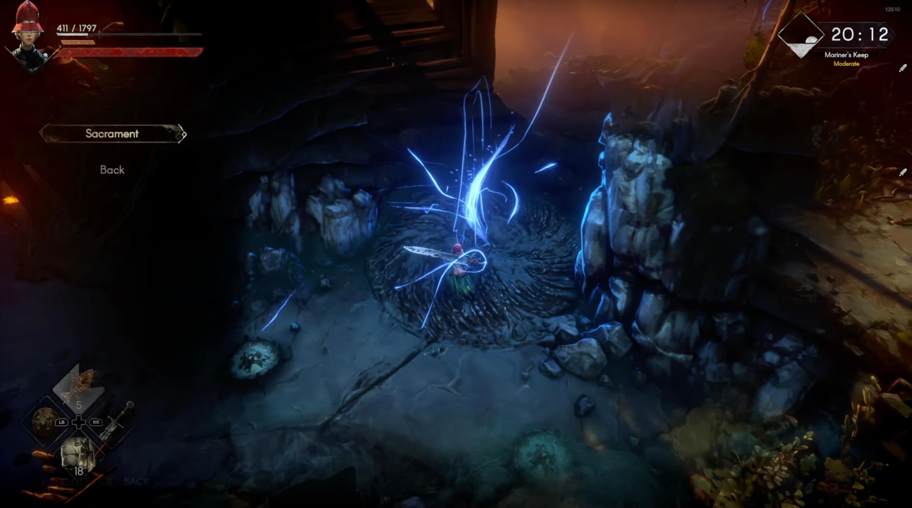
While the developers are addressing the economy within hotfixes, the game still hasn’t avoided harsh player reviews, as players have to create new characters just because they lack the funds for repairs. Occasionally, you’ll also find a few bugs in the game, but I must say that so far, there have been relatively few for me. I’m also somewhat disappointed by the temporary absence of multiplayer and the short campaign, but that’s not criticism, just an observation. However, what’s a real disaster is the absence of control key settings, making the game practically unplayable without a controller.
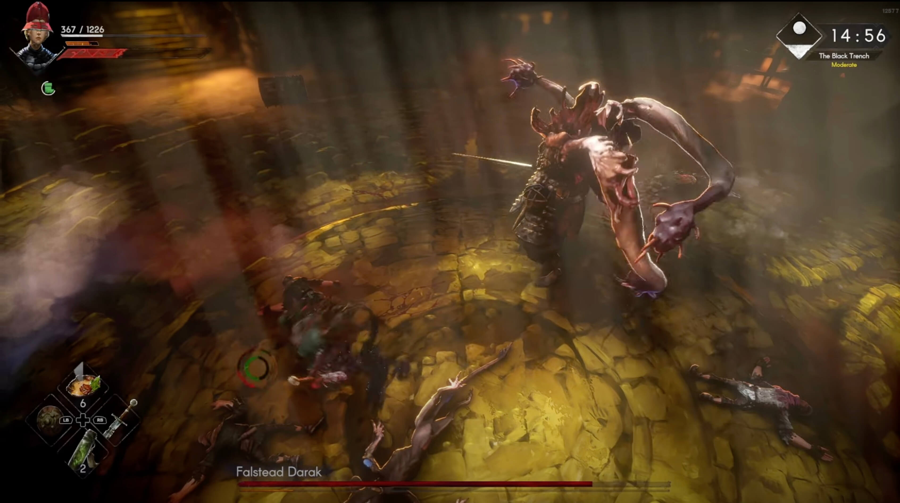
“So if you’re looking for a game for a weekend, you have something to look forward to.”
And that’s about it… I really enjoy the game, I have over 16 hours in it, level 19, but my feelings are mixed. On the one hand, I haven’t sat with a game for 10 hours straight in one day in a long time… if No Rest does anything well, it’s the constant feeling of progress and rewarding the player for overcoming the next step. On the other hand, I haven’t been this frustrated in a long time. I’d like to recommend the game to everyone who can overlook all the mentioned problems. Surely we have here a very successful endeavor, which makes me feel as if I were playing Trine, Fable, and Elden Ring again for the first time… and in many aspects, it’s truly revolutionary. On the other hand, even the best game can be overshadowed by poor balance, performance, quality of life, and the absence of long-term vertical content, and the developers will need a lot more time for that. So if you’re looking for a game for a weekend, you have something to look forward to, and the price tag of 35 euros on Steam isn’t bad in my opinion. However, the game currently feels more like a demo with promise, and that certainly won’t be for everyone.
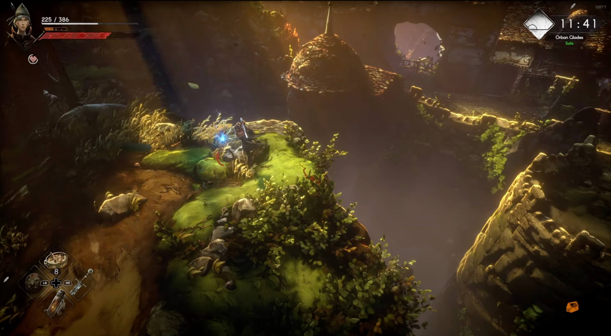